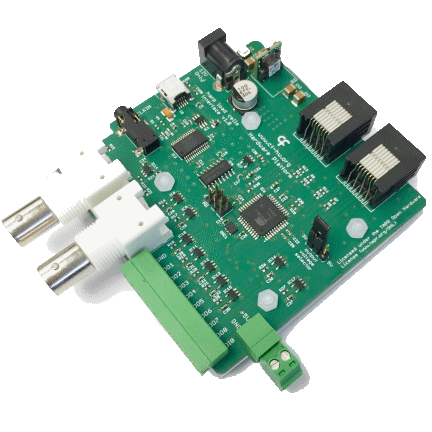

Namespace Harp.LoadCells
Harp Load Cells Interface and Reader
This pair of boards can be used to acquire analog signals from load cells and output their data to a USB host. It is additionally able to emit programmable digital events.

Key Features
- Load cells interface
- Controls up to 2 load cells readers
- Digital outputs can be regulated at 3V or 5V
- Load Cells Reader
- Up to 4 load cell sensors
- 1kHz sampling rate
- Load cells offset compensation
Connectivity
- Load cells interface
- 1x BNC input signal (IN0)
- 1x BNC output signal (Out0)
- 1x screw terminal connector interface (GND, DOUT1 to DOUT8, DIN0)
- 2x RJ45 for digital inputs (from load cells devices)
- 1x stereo jack for clock sync input (CLKIN)
- 1x USB (for computer)
- 1x power barrel connector jack (12V only)
- 1x screw terminal connector for 5V output (GND, +5V)
- Load Cells Reader
- 4x flick lock connectors (X1 to X4) with 4 analog inputs each (5V, I+, I-, 0V)
- 1x digital output [RJ45]
Interface
The interface with the Harp board can be done through Bonsai or a dedicated GUI (Graphical User Interface).
In order to use this GUI, there are some software that needs to be installed:
1 - Install the drivers.
2 - Install the runtime.
3 - Reboot the computer.
4 - Install the GUI.
Licensing
Each subdirectory will contain a license or, possibly, a set of licenses if it involves both hardware and software.
| LoadCells | |
|---|---|
| whoAmI | 1232 |
| firmwareVersion | 1.1 |
| hardwareTargets | 1.0 |
Registers
| name | address | type | length | access | description | range | interfaceType |
|---|---|---|---|---|---|---|---|
| AcquisitionState | 32 | U8 | Write | Enables the data acquisition. | EnableFlag | ||
| LoadCellData | 33 | S16 | 8 | Event | Value of single ADC read from all load cell channels. | LoadCellDataPayload | |
| DigitalInputState | 34 | U8 | Event | Status of the digital input pin 0. An event will be emitted when DI0Trigger == None. | DigitalInputs | ||
| SyncOutputState | 35 | U8 | Event | Status of the digital output pin 0. An periodic event will be emitted when DO0Sync == ToggleEachSecond. | SyncOutputs | ||
| DI0Trigger | 39 | U8 | Write | Configuration of the digital input pin 0. | TriggerConfig | ||
| DO0Sync | 40 | U8 | Write | Configuration of the digital output pin 0. | SyncConfig | ||
| DO0PulseWidth | 41 | U8 | Write | Pulse duration (ms) for the digital output pin 0. The pulse will only be emitted when DO0Sync == Pulse. | [1:255] | ||
| DigitalOutputSet | 42 | U16 | Write | Set the specified digital output lines. | DigitalOutputs | ||
| DigitalOutputClear | 43 | U16 | Write | Clear the specified digital output lines. | DigitalOutputs | ||
| DigitalOutputToggle | 44 | U16 | Write | Toggle the specified digital output lines | DigitalOutputs | ||
| DigitalOutputState | 45 | U16 | Write, Event | Write the state of all digital output lines. An event will be emitted when the value of any pin was changed by a threshold event. | DigitalOutputs | ||
| OffsetLoadCell0 | 48 | S16 | Write | Offset value for Load Cell channel 0. | 0 [-255:255] | ||
| OffsetLoadCell1 | 49 | S16 | Write | Offset value for Load Cell channel 1. | 0 [-255:255] | ||
| OffsetLoadCell2 | 50 | S16 | Write | Offset value for Load Cell channel 2. | 0 [-255:255] | ||
| OffsetLoadCell3 | 51 | S16 | Write | Offset value for Load Cell channel 3. | 0 [-255:255] | ||
| OffsetLoadCell4 | 52 | S16 | Write | Offset value for Load Cell channel 4. | 0 [-255:255] | ||
| OffsetLoadCell5 | 53 | S16 | Write | Offset value for Load Cell channel 5. | 0 [-255:255] | ||
| OffsetLoadCell6 | 54 | S16 | Write | Offset value for Load Cell channel 6. | 0 [-255:255] | ||
| OffsetLoadCell7 | 55 | S16 | Write | Offset value for Load Cell channel 7. | 0 [-255:255] | ||
| DO1TargetLoadCell | 58 | U8 | Write | Target Load Cell that will be used to trigger a threshold event on DO1 pin. | LoadCellChannel | ||
| DO2TargetLoadCell | 59 | U8 | Write | Target Load Cell that will be used to trigger a threshold event on DO2 pin. | LoadCellChannel | ||
| DO3TargetLoadCell | 60 | U8 | Write | Target Load Cell that will be used to trigger a threshold event on DO3 pin. | LoadCellChannel | ||
| DO4TargetLoadCell | 61 | U8 | Write | Target Load Cell that will be used to trigger a threshold event on DO4 pin. | LoadCellChannel | ||
| DO5TargetLoadCell | 62 | U8 | Write | Target Load Cell that will be used to trigger a threshold event on DO5 pin. | LoadCellChannel | ||
| DO6TargetLoadCell | 63 | U8 | Write | Target Load Cell that will be used to trigger a threshold event on DO6 pin. | LoadCellChannel | ||
| DO7TargetLoadCell | 64 | U8 | Write | Target Load Cell that will be used to trigger a threshold event on DO7 pin. | LoadCellChannel | ||
| DO8TargetLoadCell | 65 | U8 | Write | Target Load Cell that will be used to trigger a threshold event on DO8 pin. | LoadCellChannel | ||
| DO1Threshold | 66 | S16 | Write | Value used to threshold a Load Cell read, and trigger DO1 pin. | |||
| DO2Threshold | 67 | S16 | Write | Value used to threshold a Load Cell read, and trigger DO2 pin. | |||
| DO3Threshold | 68 | S16 | Write | Value used to threshold a Load Cell read, and trigger DO3 pin. | |||
| DO4Threshold | 69 | S16 | Write | Value used to threshold a Load Cell read, and trigger DO4 pin. | |||
| DO5Threshold | 70 | S16 | Write | Value used to threshold a Load Cell read, and trigger DO5 pin. | |||
| DO6Threshold | 71 | S16 | Write | Value used to threshold a Load Cell read, and trigger DO6 pin. | |||
| DO7Threshold | 72 | S16 | Write | Value used to threshold a Load Cell read, and trigger DO7 pin. | |||
| DO8Threshold | 73 | S16 | Write | Value used to threshold a Load Cell read, and trigger DO8 pin. | |||
| DO1TimeAboveThreshold | 74 | U16 | Write | Time (ms) above threshold value that is required to trigger a DO1 pin event. | 0 | ||
| DO2TimeAboveThreshold | 75 | U16 | Write | Time (ms) above threshold value that is required to trigger a DO2 pin event. | 0 | ||
| DO3TimeAboveThreshold | 76 | U16 | Write | Time (ms) above threshold value that is required to trigger a DO3 pin event. | 0 | ||
| DO4TimeAboveThreshold | 77 | U16 | Write | Time (ms) above threshold value that is required to trigger a DO4 pin event. | 0 | ||
| DO5TimeAboveThreshold | 78 | U16 | Write | Time (ms) above threshold value that is required to trigger a DO5 pin event. | 0 | ||
| DO6TimeAboveThreshold | 79 | U16 | Write | Time (ms) above threshold value that is required to trigger a DO6 pin event. | 0 | ||
| DO7TimeAboveThreshold | 80 | U16 | Write | Time (ms) above threshold value that is required to trigger a DO7 pin event. | 0 | ||
| DO8TimeAboveThreshold | 81 | U16 | Write | Time (ms) above threshold value that is required to trigger a DO8 pin event. | 0 | ||
| DO1TimeBelowThreshold | 82 | U16 | Write | Time (ms) below threshold value that is required to trigger a DO1 pin event. | 0 | ||
| DO2TimeBelowThreshold | 83 | U16 | Write | Time (ms) below threshold value that is required to trigger a DO2 pin event. | 0 | ||
| DO3TimeBelowThreshold | 84 | U16 | Write | Time (ms) below threshold value that is required to trigger a DO3 pin event. | 0 | ||
| DO4TimeBelowThreshold | 85 | U16 | Write | Time (ms) below threshold value that is required to trigger a DO4 pin event. | 0 | ||
| DO5TimeBelowThreshold | 86 | U16 | Write | Time (ms) below threshold value that is required to trigger a DO5 pin event. | 0 | ||
| DO6TimeBelowThreshold | 87 | U16 | Write | Time (ms) below threshold value that is required to trigger a DO6 pin event. | 0 | ||
| DO7TimeBelowThreshold | 88 | U16 | Write | Time (ms) below threshold value that is required to trigger a DO7 pin event. | 0 | ||
| DO8TimeBelowThreshold | 89 | U16 | Write | Time (ms) below threshold value that is required to trigger a DO8 pin event. | 0 | ||
| EnableEvents | 90 | U8 | Write | Specifies the active events in the device. | LoadCellEvents |
Classes
- AcquisitionState
Represents a register that enables the data acquisition.
- AsyncDevice
Represents an asynchronous API to configure and interface with LoadCells devices.
- CreateAcquisitionStatePayload
Represents an operator that creates a message payload that enables the data acquisition.
- CreateDI0TriggerPayload
Represents an operator that creates a message payload that configuration of the digital input pin 0.
- CreateDO0PulseWidthPayload
Represents an operator that creates a message payload that pulse duration (ms) for the digital output pin 0. The pulse will only be emitted when DO0Sync == Pulse.
- CreateDO0SyncPayload
Represents an operator that creates a message payload that configuration of the digital output pin 0.
- CreateDO1TargetLoadCellPayload
Represents an operator that creates a message payload that target Load Cell that will be used to trigger a threshold event on DO1 pin.
- CreateDO1ThresholdPayload
Represents an operator that creates a message payload that value used to threshold a Load Cell read, and trigger DO1 pin.
- CreateDO1TimeAboveThresholdPayload
Represents an operator that creates a message payload that time (ms) above threshold value that is required to trigger a DO1 pin event.
- CreateDO1TimeBelowThresholdPayload
Represents an operator that creates a message payload that time (ms) below threshold value that is required to trigger a DO1 pin event.
- CreateDO2TargetLoadCellPayload
Represents an operator that creates a message payload that target Load Cell that will be used to trigger a threshold event on DO2 pin.
- CreateDO2ThresholdPayload
Represents an operator that creates a message payload that value used to threshold a Load Cell read, and trigger DO2 pin.
- CreateDO2TimeAboveThresholdPayload
Represents an operator that creates a message payload that time (ms) above threshold value that is required to trigger a DO2 pin event.
- CreateDO2TimeBelowThresholdPayload
Represents an operator that creates a message payload that time (ms) below threshold value that is required to trigger a DO2 pin event.
- CreateDO3TargetLoadCellPayload
Represents an operator that creates a message payload that target Load Cell that will be used to trigger a threshold event on DO3 pin.
- CreateDO3ThresholdPayload
Represents an operator that creates a message payload that value used to threshold a Load Cell read, and trigger DO3 pin.
- CreateDO3TimeAboveThresholdPayload
Represents an operator that creates a message payload that time (ms) above threshold value that is required to trigger a DO3 pin event.
- CreateDO3TimeBelowThresholdPayload
Represents an operator that creates a message payload that time (ms) below threshold value that is required to trigger a DO3 pin event.
- CreateDO4TargetLoadCellPayload
Represents an operator that creates a message payload that target Load Cell that will be used to trigger a threshold event on DO4 pin.
- CreateDO4ThresholdPayload
Represents an operator that creates a message payload that value used to threshold a Load Cell read, and trigger DO4 pin.
- CreateDO4TimeAboveThresholdPayload
Represents an operator that creates a message payload that time (ms) above threshold value that is required to trigger a DO4 pin event.
- CreateDO4TimeBelowThresholdPayload
Represents an operator that creates a message payload that time (ms) below threshold value that is required to trigger a DO4 pin event.
- CreateDO5TargetLoadCellPayload
Represents an operator that creates a message payload that target Load Cell that will be used to trigger a threshold event on DO5 pin.
- CreateDO5ThresholdPayload
Represents an operator that creates a message payload that value used to threshold a Load Cell read, and trigger DO5 pin.
- CreateDO5TimeAboveThresholdPayload
Represents an operator that creates a message payload that time (ms) above threshold value that is required to trigger a DO5 pin event.
- CreateDO5TimeBelowThresholdPayload
Represents an operator that creates a message payload that time (ms) below threshold value that is required to trigger a DO5 pin event.
- CreateDO6TargetLoadCellPayload
Represents an operator that creates a message payload that target Load Cell that will be used to trigger a threshold event on DO6 pin.
- CreateDO6ThresholdPayload
Represents an operator that creates a message payload that value used to threshold a Load Cell read, and trigger DO6 pin.
- CreateDO6TimeAboveThresholdPayload
Represents an operator that creates a message payload that time (ms) above threshold value that is required to trigger a DO6 pin event.
- CreateDO6TimeBelowThresholdPayload
Represents an operator that creates a message payload that time (ms) below threshold value that is required to trigger a DO6 pin event.
- CreateDO7TargetLoadCellPayload
Represents an operator that creates a message payload that target Load Cell that will be used to trigger a threshold event on DO7 pin.
- CreateDO7ThresholdPayload
Represents an operator that creates a message payload that value used to threshold a Load Cell read, and trigger DO7 pin.
- CreateDO7TimeAboveThresholdPayload
Represents an operator that creates a message payload that time (ms) above threshold value that is required to trigger a DO7 pin event.
- CreateDO7TimeBelowThresholdPayload
Represents an operator that creates a message payload that time (ms) below threshold value that is required to trigger a DO7 pin event.
- CreateDO8TargetLoadCellPayload
Represents an operator that creates a message payload that target Load Cell that will be used to trigger a threshold event on DO8 pin.
- CreateDO8ThresholdPayload
Represents an operator that creates a message payload that value used to threshold a Load Cell read, and trigger DO8 pin.
- CreateDO8TimeAboveThresholdPayload
Represents an operator that creates a message payload that time (ms) above threshold value that is required to trigger a DO8 pin event.
- CreateDO8TimeBelowThresholdPayload
Represents an operator that creates a message payload that time (ms) below threshold value that is required to trigger a DO8 pin event.
- CreateDigitalInputStatePayload
Represents an operator that creates a message payload that status of the digital input pin 0. An event will be emitted when DI0Trigger == None.
- CreateDigitalOutputClearPayload
Represents an operator that creates a message payload that clear the specified digital output lines.
- CreateDigitalOutputSetPayload
Represents an operator that creates a message payload that set the specified digital output lines.
- CreateDigitalOutputStatePayload
Represents an operator that creates a message payload that write the state of all digital output lines. An event will be emitted when the value of any pin was changed by a threshold event.
- CreateDigitalOutputTogglePayload
Represents an operator that creates a message payload that toggle the specified digital output lines.
- CreateEnableEventsPayload
Represents an operator that creates a message payload that specifies the active events in the device.
- CreateLoadCellDataPayload
Represents an operator that creates a message payload that value of single ADC read from all load cell channels.
- CreateMessage
Represents an operator which creates standard message payloads for the LoadCells device.
- CreateOffsetLoadCell0Payload
Represents an operator that creates a message payload that offset value for Load Cell channel 0.
- CreateOffsetLoadCell1Payload
Represents an operator that creates a message payload that offset value for Load Cell channel 1.
- CreateOffsetLoadCell2Payload
Represents an operator that creates a message payload that offset value for Load Cell channel 2.
- CreateOffsetLoadCell3Payload
Represents an operator that creates a message payload that offset value for Load Cell channel 3.
- CreateOffsetLoadCell4Payload
Represents an operator that creates a message payload that offset value for Load Cell channel 4.
- CreateOffsetLoadCell5Payload
Represents an operator that creates a message payload that offset value for Load Cell channel 5.
- CreateOffsetLoadCell6Payload
Represents an operator that creates a message payload that offset value for Load Cell channel 6.
- CreateOffsetLoadCell7Payload
Represents an operator that creates a message payload that offset value for Load Cell channel 7.
- CreateSyncOutputStatePayload
Represents an operator that creates a message payload that status of the digital output pin 0. An periodic event will be emitted when DO0Sync == ToggleEachSecond.
- CreateTimestampedAcquisitionStatePayload
Represents an operator that creates a timestamped message payload that enables the data acquisition.
- CreateTimestampedDI0TriggerPayload
Represents an operator that creates a timestamped message payload that configuration of the digital input pin 0.
- CreateTimestampedDO0PulseWidthPayload
Represents an operator that creates a timestamped message payload that pulse duration (ms) for the digital output pin 0. The pulse will only be emitted when DO0Sync == Pulse.
- CreateTimestampedDO0SyncPayload
Represents an operator that creates a timestamped message payload that configuration of the digital output pin 0.
- CreateTimestampedDO1TargetLoadCellPayload
Represents an operator that creates a timestamped message payload that target Load Cell that will be used to trigger a threshold event on DO1 pin.
- CreateTimestampedDO1ThresholdPayload
Represents an operator that creates a timestamped message payload that value used to threshold a Load Cell read, and trigger DO1 pin.
- CreateTimestampedDO1TimeAboveThresholdPayload
Represents an operator that creates a timestamped message payload that time (ms) above threshold value that is required to trigger a DO1 pin event.
- CreateTimestampedDO1TimeBelowThresholdPayload
Represents an operator that creates a timestamped message payload that time (ms) below threshold value that is required to trigger a DO1 pin event.
- CreateTimestampedDO2TargetLoadCellPayload
Represents an operator that creates a timestamped message payload that target Load Cell that will be used to trigger a threshold event on DO2 pin.
- CreateTimestampedDO2ThresholdPayload
Represents an operator that creates a timestamped message payload that value used to threshold a Load Cell read, and trigger DO2 pin.
- CreateTimestampedDO2TimeAboveThresholdPayload
Represents an operator that creates a timestamped message payload that time (ms) above threshold value that is required to trigger a DO2 pin event.
- CreateTimestampedDO2TimeBelowThresholdPayload
Represents an operator that creates a timestamped message payload that time (ms) below threshold value that is required to trigger a DO2 pin event.
- CreateTimestampedDO3TargetLoadCellPayload
Represents an operator that creates a timestamped message payload that target Load Cell that will be used to trigger a threshold event on DO3 pin.
- CreateTimestampedDO3ThresholdPayload
Represents an operator that creates a timestamped message payload that value used to threshold a Load Cell read, and trigger DO3 pin.
- CreateTimestampedDO3TimeAboveThresholdPayload
Represents an operator that creates a timestamped message payload that time (ms) above threshold value that is required to trigger a DO3 pin event.
- CreateTimestampedDO3TimeBelowThresholdPayload
Represents an operator that creates a timestamped message payload that time (ms) below threshold value that is required to trigger a DO3 pin event.
- CreateTimestampedDO4TargetLoadCellPayload
Represents an operator that creates a timestamped message payload that target Load Cell that will be used to trigger a threshold event on DO4 pin.
- CreateTimestampedDO4ThresholdPayload
Represents an operator that creates a timestamped message payload that value used to threshold a Load Cell read, and trigger DO4 pin.
- CreateTimestampedDO4TimeAboveThresholdPayload
Represents an operator that creates a timestamped message payload that time (ms) above threshold value that is required to trigger a DO4 pin event.
- CreateTimestampedDO4TimeBelowThresholdPayload
Represents an operator that creates a timestamped message payload that time (ms) below threshold value that is required to trigger a DO4 pin event.
- CreateTimestampedDO5TargetLoadCellPayload
Represents an operator that creates a timestamped message payload that target Load Cell that will be used to trigger a threshold event on DO5 pin.
- CreateTimestampedDO5ThresholdPayload
Represents an operator that creates a timestamped message payload that value used to threshold a Load Cell read, and trigger DO5 pin.
- CreateTimestampedDO5TimeAboveThresholdPayload
Represents an operator that creates a timestamped message payload that time (ms) above threshold value that is required to trigger a DO5 pin event.
- CreateTimestampedDO5TimeBelowThresholdPayload
Represents an operator that creates a timestamped message payload that time (ms) below threshold value that is required to trigger a DO5 pin event.
- CreateTimestampedDO6TargetLoadCellPayload
Represents an operator that creates a timestamped message payload that target Load Cell that will be used to trigger a threshold event on DO6 pin.
- CreateTimestampedDO6ThresholdPayload
Represents an operator that creates a timestamped message payload that value used to threshold a Load Cell read, and trigger DO6 pin.
- CreateTimestampedDO6TimeAboveThresholdPayload
Represents an operator that creates a timestamped message payload that time (ms) above threshold value that is required to trigger a DO6 pin event.
- CreateTimestampedDO6TimeBelowThresholdPayload
Represents an operator that creates a timestamped message payload that time (ms) below threshold value that is required to trigger a DO6 pin event.
- CreateTimestampedDO7TargetLoadCellPayload
Represents an operator that creates a timestamped message payload that target Load Cell that will be used to trigger a threshold event on DO7 pin.
- CreateTimestampedDO7ThresholdPayload
Represents an operator that creates a timestamped message payload that value used to threshold a Load Cell read, and trigger DO7 pin.
- CreateTimestampedDO7TimeAboveThresholdPayload
Represents an operator that creates a timestamped message payload that time (ms) above threshold value that is required to trigger a DO7 pin event.
- CreateTimestampedDO7TimeBelowThresholdPayload
Represents an operator that creates a timestamped message payload that time (ms) below threshold value that is required to trigger a DO7 pin event.
- CreateTimestampedDO8TargetLoadCellPayload
Represents an operator that creates a timestamped message payload that target Load Cell that will be used to trigger a threshold event on DO8 pin.
- CreateTimestampedDO8ThresholdPayload
Represents an operator that creates a timestamped message payload that value used to threshold a Load Cell read, and trigger DO8 pin.
- CreateTimestampedDO8TimeAboveThresholdPayload
Represents an operator that creates a timestamped message payload that time (ms) above threshold value that is required to trigger a DO8 pin event.
- CreateTimestampedDO8TimeBelowThresholdPayload
Represents an operator that creates a timestamped message payload that time (ms) below threshold value that is required to trigger a DO8 pin event.
- CreateTimestampedDigitalInputStatePayload
Represents an operator that creates a timestamped message payload that status of the digital input pin 0. An event will be emitted when DI0Trigger == None.
- CreateTimestampedDigitalOutputClearPayload
Represents an operator that creates a timestamped message payload that clear the specified digital output lines.
- CreateTimestampedDigitalOutputSetPayload
Represents an operator that creates a timestamped message payload that set the specified digital output lines.
- CreateTimestampedDigitalOutputStatePayload
Represents an operator that creates a timestamped message payload that write the state of all digital output lines. An event will be emitted when the value of any pin was changed by a threshold event.
- CreateTimestampedDigitalOutputTogglePayload
Represents an operator that creates a timestamped message payload that toggle the specified digital output lines.
- CreateTimestampedEnableEventsPayload
Represents an operator that creates a timestamped message payload that specifies the active events in the device.
- CreateTimestampedLoadCellDataPayload
Represents an operator that creates a timestamped message payload that value of single ADC read from all load cell channels.
- CreateTimestampedOffsetLoadCell0Payload
Represents an operator that creates a timestamped message payload that offset value for Load Cell channel 0.
- CreateTimestampedOffsetLoadCell1Payload
Represents an operator that creates a timestamped message payload that offset value for Load Cell channel 1.
- CreateTimestampedOffsetLoadCell2Payload
Represents an operator that creates a timestamped message payload that offset value for Load Cell channel 2.
- CreateTimestampedOffsetLoadCell3Payload
Represents an operator that creates a timestamped message payload that offset value for Load Cell channel 3.
- CreateTimestampedOffsetLoadCell4Payload
Represents an operator that creates a timestamped message payload that offset value for Load Cell channel 4.
- CreateTimestampedOffsetLoadCell5Payload
Represents an operator that creates a timestamped message payload that offset value for Load Cell channel 5.
- CreateTimestampedOffsetLoadCell6Payload
Represents an operator that creates a timestamped message payload that offset value for Load Cell channel 6.
- CreateTimestampedOffsetLoadCell7Payload
Represents an operator that creates a timestamped message payload that offset value for Load Cell channel 7.
- CreateTimestampedSyncOutputStatePayload
Represents an operator that creates a timestamped message payload that status of the digital output pin 0. An periodic event will be emitted when DO0Sync == ToggleEachSecond.
- DI0Trigger
Represents a register that configuration of the digital input pin 0.
- DO0PulseWidth
Represents a register that pulse duration (ms) for the digital output pin 0. The pulse will only be emitted when DO0Sync == Pulse.
- DO0Sync
Represents a register that configuration of the digital output pin 0.
- DO1TargetLoadCell
Represents a register that target Load Cell that will be used to trigger a threshold event on DO1 pin.
- DO1Threshold
Represents a register that value used to threshold a Load Cell read, and trigger DO1 pin.
- DO1TimeAboveThreshold
Represents a register that time (ms) above threshold value that is required to trigger a DO1 pin event.
- DO1TimeBelowThreshold
Represents a register that time (ms) below threshold value that is required to trigger a DO1 pin event.
- DO2TargetLoadCell
Represents a register that target Load Cell that will be used to trigger a threshold event on DO2 pin.
- DO2Threshold
Represents a register that value used to threshold a Load Cell read, and trigger DO2 pin.
- DO2TimeAboveThreshold
Represents a register that time (ms) above threshold value that is required to trigger a DO2 pin event.
- DO2TimeBelowThreshold
Represents a register that time (ms) below threshold value that is required to trigger a DO2 pin event.
- DO3TargetLoadCell
Represents a register that target Load Cell that will be used to trigger a threshold event on DO3 pin.
- DO3Threshold
Represents a register that value used to threshold a Load Cell read, and trigger DO3 pin.
- DO3TimeAboveThreshold
Represents a register that time (ms) above threshold value that is required to trigger a DO3 pin event.
- DO3TimeBelowThreshold
Represents a register that time (ms) below threshold value that is required to trigger a DO3 pin event.
- DO4TargetLoadCell
Represents a register that target Load Cell that will be used to trigger a threshold event on DO4 pin.
- DO4Threshold
Represents a register that value used to threshold a Load Cell read, and trigger DO4 pin.
- DO4TimeAboveThreshold
Represents a register that time (ms) above threshold value that is required to trigger a DO4 pin event.
- DO4TimeBelowThreshold
Represents a register that time (ms) below threshold value that is required to trigger a DO4 pin event.
- DO5TargetLoadCell
Represents a register that target Load Cell that will be used to trigger a threshold event on DO5 pin.
- DO5Threshold
Represents a register that value used to threshold a Load Cell read, and trigger DO5 pin.
- DO5TimeAboveThreshold
Represents a register that time (ms) above threshold value that is required to trigger a DO5 pin event.
- DO5TimeBelowThreshold
Represents a register that time (ms) below threshold value that is required to trigger a DO5 pin event.
- DO6TargetLoadCell
Represents a register that target Load Cell that will be used to trigger a threshold event on DO6 pin.
- DO6Threshold
Represents a register that value used to threshold a Load Cell read, and trigger DO6 pin.
- DO6TimeAboveThreshold
Represents a register that time (ms) above threshold value that is required to trigger a DO6 pin event.
- DO6TimeBelowThreshold
Represents a register that time (ms) below threshold value that is required to trigger a DO6 pin event.
- DO7TargetLoadCell
Represents a register that target Load Cell that will be used to trigger a threshold event on DO7 pin.
- DO7Threshold
Represents a register that value used to threshold a Load Cell read, and trigger DO7 pin.
- DO7TimeAboveThreshold
Represents a register that time (ms) above threshold value that is required to trigger a DO7 pin event.
- DO7TimeBelowThreshold
Represents a register that time (ms) below threshold value that is required to trigger a DO7 pin event.
- DO8TargetLoadCell
Represents a register that target Load Cell that will be used to trigger a threshold event on DO8 pin.
- DO8Threshold
Represents a register that value used to threshold a Load Cell read, and trigger DO8 pin.
- DO8TimeAboveThreshold
Represents a register that time (ms) above threshold value that is required to trigger a DO8 pin event.
- DO8TimeBelowThreshold
Represents a register that time (ms) below threshold value that is required to trigger a DO8 pin event.
- Device
Represents an observable source of messages from the Harp device connected at the specified serial port.
- DigitalInputState
Represents a register that status of the digital input pin 0. An event will be emitted when DI0Trigger == None.
- DigitalOutputClear
Represents a register that clear the specified digital output lines.
- DigitalOutputSet
Represents a register that set the specified digital output lines.
- DigitalOutputState
Represents a register that write the state of all digital output lines. An event will be emitted when the value of any pin was changed by a threshold event.
- DigitalOutputToggle
Represents a register that toggle the specified digital output lines.
- EnableEvents
Represents a register that specifies the active events in the device.
- FilterRegister
Represents an operator that filters register-specific messages reported by the Harp.LoadCells device.
- Format
Represents an operator which formats a sequence of values as specific LoadCells register messages.
- GroupByRegister
Represents an operator that groups the sequence of Harp.LoadCells" messages by register type.
- LoadCellData
Represents a register that value of single ADC read from all load cell channels.
- OffsetLoadCell0
Represents a register that offset value for Load Cell channel 0.
- OffsetLoadCell1
Represents a register that offset value for Load Cell channel 1.
- OffsetLoadCell2
Represents a register that offset value for Load Cell channel 2.
- OffsetLoadCell3
Represents a register that offset value for Load Cell channel 3.
- OffsetLoadCell4
Represents a register that offset value for Load Cell channel 4.
- OffsetLoadCell5
Represents a register that offset value for Load Cell channel 5.
- OffsetLoadCell6
Represents a register that offset value for Load Cell channel 6.
- OffsetLoadCell7
Represents a register that offset value for Load Cell channel 7.
- Parse
Represents an operator which filters and selects specific messages reported by the LoadCells device.
- SyncOutputState
Represents a register that status of the digital output pin 0. An periodic event will be emitted when DO0Sync == ToggleEachSecond.
- TimestampedAcquisitionState
Provides methods for manipulating timestamped messages from the AcquisitionState register.
- TimestampedDI0Trigger
Provides methods for manipulating timestamped messages from the DI0Trigger register.
- TimestampedDO0PulseWidth
Provides methods for manipulating timestamped messages from the DO0PulseWidth register.
- TimestampedDO0Sync
Provides methods for manipulating timestamped messages from the DO0Sync register.
- TimestampedDO1TargetLoadCell
Provides methods for manipulating timestamped messages from the DO1TargetLoadCell register.
- TimestampedDO1Threshold
Provides methods for manipulating timestamped messages from the DO1Threshold register.
- TimestampedDO1TimeAboveThreshold
Provides methods for manipulating timestamped messages from the DO1TimeAboveThreshold register.
- TimestampedDO1TimeBelowThreshold
Provides methods for manipulating timestamped messages from the DO1TimeBelowThreshold register.
- TimestampedDO2TargetLoadCell
Provides methods for manipulating timestamped messages from the DO2TargetLoadCell register.
- TimestampedDO2Threshold
Provides methods for manipulating timestamped messages from the DO2Threshold register.
- TimestampedDO2TimeAboveThreshold
Provides methods for manipulating timestamped messages from the DO2TimeAboveThreshold register.
- TimestampedDO2TimeBelowThreshold
Provides methods for manipulating timestamped messages from the DO2TimeBelowThreshold register.
- TimestampedDO3TargetLoadCell
Provides methods for manipulating timestamped messages from the DO3TargetLoadCell register.
- TimestampedDO3Threshold
Provides methods for manipulating timestamped messages from the DO3Threshold register.
- TimestampedDO3TimeAboveThreshold
Provides methods for manipulating timestamped messages from the DO3TimeAboveThreshold register.
- TimestampedDO3TimeBelowThreshold
Provides methods for manipulating timestamped messages from the DO3TimeBelowThreshold register.
- TimestampedDO4TargetLoadCell
Provides methods for manipulating timestamped messages from the DO4TargetLoadCell register.
- TimestampedDO4Threshold
Provides methods for manipulating timestamped messages from the DO4Threshold register.
- TimestampedDO4TimeAboveThreshold
Provides methods for manipulating timestamped messages from the DO4TimeAboveThreshold register.
- TimestampedDO4TimeBelowThreshold
Provides methods for manipulating timestamped messages from the DO4TimeBelowThreshold register.
- TimestampedDO5TargetLoadCell
Provides methods for manipulating timestamped messages from the DO5TargetLoadCell register.
- TimestampedDO5Threshold
Provides methods for manipulating timestamped messages from the DO5Threshold register.
- TimestampedDO5TimeAboveThreshold
Provides methods for manipulating timestamped messages from the DO5TimeAboveThreshold register.
- TimestampedDO5TimeBelowThreshold
Provides methods for manipulating timestamped messages from the DO5TimeBelowThreshold register.
- TimestampedDO6TargetLoadCell
Provides methods for manipulating timestamped messages from the DO6TargetLoadCell register.
- TimestampedDO6Threshold
Provides methods for manipulating timestamped messages from the DO6Threshold register.
- TimestampedDO6TimeAboveThreshold
Provides methods for manipulating timestamped messages from the DO6TimeAboveThreshold register.
- TimestampedDO6TimeBelowThreshold
Provides methods for manipulating timestamped messages from the DO6TimeBelowThreshold register.
- TimestampedDO7TargetLoadCell
Provides methods for manipulating timestamped messages from the DO7TargetLoadCell register.
- TimestampedDO7Threshold
Provides methods for manipulating timestamped messages from the DO7Threshold register.
- TimestampedDO7TimeAboveThreshold
Provides methods for manipulating timestamped messages from the DO7TimeAboveThreshold register.
- TimestampedDO7TimeBelowThreshold
Provides methods for manipulating timestamped messages from the DO7TimeBelowThreshold register.
- TimestampedDO8TargetLoadCell
Provides methods for manipulating timestamped messages from the DO8TargetLoadCell register.
- TimestampedDO8Threshold
Provides methods for manipulating timestamped messages from the DO8Threshold register.
- TimestampedDO8TimeAboveThreshold
Provides methods for manipulating timestamped messages from the DO8TimeAboveThreshold register.
- TimestampedDO8TimeBelowThreshold
Provides methods for manipulating timestamped messages from the DO8TimeBelowThreshold register.
- TimestampedDigitalInputState
Provides methods for manipulating timestamped messages from the DigitalInputState register.
- TimestampedDigitalOutputClear
Provides methods for manipulating timestamped messages from the DigitalOutputClear register.
- TimestampedDigitalOutputSet
Provides methods for manipulating timestamped messages from the DigitalOutputSet register.
- TimestampedDigitalOutputState
Provides methods for manipulating timestamped messages from the DigitalOutputState register.
- TimestampedDigitalOutputToggle
Provides methods for manipulating timestamped messages from the DigitalOutputToggle register.
- TimestampedEnableEvents
Provides methods for manipulating timestamped messages from the EnableEvents register.
- TimestampedLoadCellData
Provides methods for manipulating timestamped messages from the LoadCellData register.
- TimestampedOffsetLoadCell0
Provides methods for manipulating timestamped messages from the OffsetLoadCell0 register.
- TimestampedOffsetLoadCell1
Provides methods for manipulating timestamped messages from the OffsetLoadCell1 register.
- TimestampedOffsetLoadCell2
Provides methods for manipulating timestamped messages from the OffsetLoadCell2 register.
- TimestampedOffsetLoadCell3
Provides methods for manipulating timestamped messages from the OffsetLoadCell3 register.
- TimestampedOffsetLoadCell4
Provides methods for manipulating timestamped messages from the OffsetLoadCell4 register.
- TimestampedOffsetLoadCell5
Provides methods for manipulating timestamped messages from the OffsetLoadCell5 register.
- TimestampedOffsetLoadCell6
Provides methods for manipulating timestamped messages from the OffsetLoadCell6 register.
- TimestampedOffsetLoadCell7
Provides methods for manipulating timestamped messages from the OffsetLoadCell7 register.
- TimestampedSyncOutputState
Provides methods for manipulating timestamped messages from the SyncOutputState register.
Structs
- LoadCellDataPayload
Represents the payload of the LoadCellData register.
Enums
- DigitalInputs
Available digital input lines.
- DigitalOutputs
Specifies the state of port digital output lines.
- LoadCellChannel
Available target load cells to be targeted on threshold events.
- LoadCellEvents
The events that can be enabled/disabled.
- SyncConfig
Available configurations when using a digital output pin to report firmware events.
- SyncOutputs
Specifies the state output synchronization lines.
- TriggerConfig
Available configurations when using a digital input as an acquisition trigger.